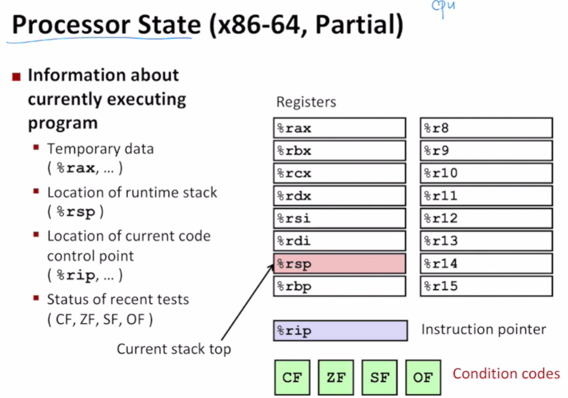

System Programming Week 5
Control: Condition codes
Processor State

Condition Codes (Implicit Setting)
Single bit register
addq Src, Dest
t = a + b
- CF (Carry Flag) for unsigned
- CF set if carry out from most significant bit (unsigned overflow, 비트연산으로 인해 most significant bit의 overflow가 일어났을 때)
- ZF (Zero Flag)
- ZF set if
t == 0
- ZF set if
- SF (Sign Flag) for signed
- SF set if
t < 0(as signed)
- SF set if
- OF (Overflow Flag) for signed
- set if two’s-complement (signed) overflow:
(a > 0 && b > 0 && t < 0) || (a < 0 && b < 0 && t >= 0)
- set if two’s-complement (signed) overflow:
Not set by leaq instruction
Condition codes (Explicit Setting by Compare Instruction)
cmpq Src2, Src1
cmpq b, a like computing a - b without setting destination. (빼기 연산으로 compare 연산을 함)
- CF set if carry out from most significant bit (used for unsigned comparisions)
- ZF set if
a == b - SF set if
(a - b) < 0(as signed) - OF set if two’s-complement (signed) overflow
(a > 0 && b < 0 && (a - b) < 0) || (a < 0 && b < 0 && (a - b) >=0)
Condition Codes (Explicit Setting: Test)
Explicit Setting by Test instruction
testq Src2, Src1
testq b, alike computinga & bwithout setting destination.- bit by bit으로 comparison 연산
- Sets condition codes based on value of Src1 & Src2
- Useful to have one of the operands be a mask
- ZF set when
a & b == 0 - SF set when
a & b < 0
Reading condition codes
Condition branches
Jumping
jX Instructions - jump to different part of code depending on condition codes
Expressing with Goto Code
C allows goto statement
Jump to position designated by label.
Using conditional moves
Conditional move instructions
- instruction supports: if (Test) Dest <- Src
- GCC tries to use them
- but, only when known to be safe.
- Branch의 모든 계산을 다 끝내놓고, 조건에 맞는 결과만 가져와서 씀
Why?
- Branches are very disruptive to instruction flow through pipelines.
- Conditional moves do not require control transfers.
Bad cases for conditional move
Loops
“Do-While” Loop example
Do-While statement가 assembly에서 가장 직관적으로 변환됨
“Do-While” translation
“While” translation
-Og는 optimization을 끄는 것
“For” loop form
Switch statement
왜 if statement보다 switch statement가 더 성능이 좋은지 이해하기
Switch statement example
Jump table structure
Jump table을 작성해서 argument가 들어오자 마자 조건에 맞는 Code block으로 바로 jump 할 수 있는 code block의 address를 저장하고 있는 jump table을 활용함. -> 계산을 하지 않아도 됨
if statement로 many cases를 사용하면 하나하나 conditions들을 연산해야 하기 때문에 switch statement가 더 빠름
Switch statement example

Assembly setup explanation
Table structure
- Each targe requires 8 bytes
- Base address
.L4
Jumping
- Direct: jmp
.L8 - Jump target is denoted by label
.L8 - Indirect: jmp
*.L4(, %rdi, 8) - Must scale by factor of 8 (addresses are 8 bytes)
- Fetch target from effective Address
.L4 + x * 8- only for \(0<=x<=6\)